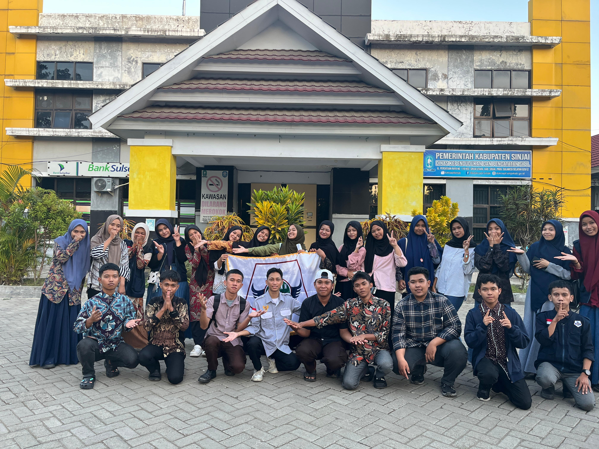

Galeri dan Dokumentasi Kegiatan KESAN
Berikut adalah dokumentasi dari berbagai kegiatan dan momen berharga yang telah kami lalui bersama KESAN

Musyawarah Cabang I
20-21 September 2025

Galang Dana
17 September 2025
Pendidikan Dasar Pancasila Angkatan 13
14 September 2025
Jumpa Rindu Kesan
9 September 2025
Pendidikan Dasar Pancasila Angkatan 12
22 Juli 2025
Bina Akrab Pertama
Mei 2025
Pendidikan Dasar Pancasila Angkatan 11
April 2025
Pendidikan Dasar Pancasila Angkatan 10
Maret 2025
Pendidikan Dasar Pancasila Angkatan 9
Februari 2025